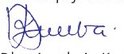

Shukurani
Taasisi ya Elimu Tanzania (TET) inatambua na kuthamini mchango
muhimu wa washiriki waliofanikisha uandishi na uunganishwaji wa
maudhui ya Kitabu cha Kuandika cha Mwanafunzi Darasa la Kwanza
na la Pili. Uunganishwaji wa maudhui ya vitabu hivi umefanikisha
kupatikana kwa Kitabu cha Kuandika cha Mwanafunzi wa Kundirika
la Kwanza Mwaka wa Kwanza. Aidha, TET inatoa shukurani kwa
taasisi zote za umma na binafsi zilizoshiriki kwa namna moja ama
nyingine katika kufanikisha uandaaji wa kitabu hiki. Taasisi hizo ni
Chuo Kikuu cha Dar es Salaam, vyuo vya ualimu, pamoja na shule za
msingi.
TET inatoa shukurani za dhati kwa mchango uliotolewa na wataalamu
wafuatao:
Waunganishaji: Bi. Merina A. Yohana na Bi. Blandina C.
Mponji
Mhariri: Dkt. Faraja J. Mwendamseke
Msanifu: Bw. Silvanus A. Mihambo
Wachoraji: Alama Arts and Media Productions Limited
na Bw. Fikiri Msimbe
Mratibu: Bi. Merina A. Yohana
Pia, TET inatoa shukurani kwa walimu na wanafunzi walioshiriki
katika ujaribishaji wa maudhui ya kitabu hiki.
Vilevile, TET inatoa shukurani za pekee kwa Shirika la “Global
Partnership for Education (GPE)” kupitia Mradi wa Kukuza Stadi za
Kusoma, Kuandika na Kuhesabu (KKK) uitwao “Literacy and Numeracy
Education Support (LANES II)” kwa ufadhili wao uliofanikisha kazi ya
kutayarisha na kuchapa kitabu hiki.
Aidha, TET inatoa shukurani za pekee kwa Wizara ya Elimu, Sayansi
na Teknolojia kwa kuratibu kwa karibu mchakato mzima wa uandaaji
na uchapaji wa kitabu hiki.

Dkt. Aneth A. Komba
Mkurugenzi Mkuu
Taasisi ya Elimu Tanzania